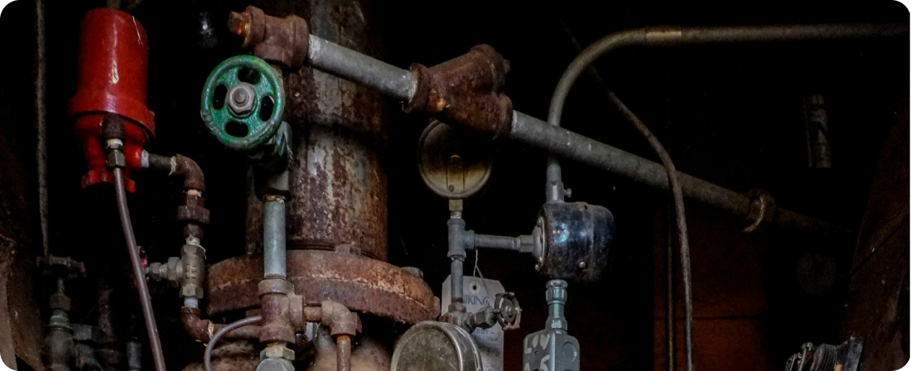
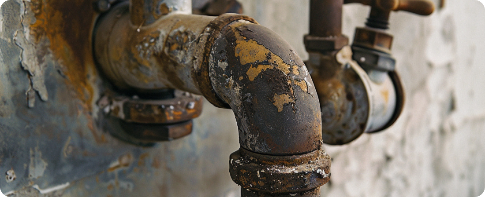

How Aging Pipes Affect Your Home's Plumbing System
Aging pipes are an often-overlooked aspect of homeownership that can have significant implications for the functionality and integrity of your plumbing system. While they may seem innocuous at first glance, aging pipes can lead to a host of problems that compromise the efficiency and safety of your home's plumbing infrastructure.
One of the primary issues associated with aging pipes is corrosion. Over time, pipes can corrode due to exposure to water, minerals, and other elements. This corrosion can weaken the pipes, leading to leaks, cracks, and eventual failure. Even small pinhole leaks can result in water damage to your home's structure and belongings, not to mention the potential for mold growth and other health hazards.
In addition to corrosion, aging pipes may also suffer from reduced water flow and pressure. Mineral deposits can accumulate inside the pipes, restricting the flow of water and causing faucets and fixtures to run slowly or inconsistently. This not only affects the convenience of everyday tasks like showering and washing dishes but can also indicate more serious underlying issues with the plumbing system.
Furthermore, aging pipes are more susceptible to sudden failures, such as bursts or ruptures. As pipes weaken over time, they become increasingly prone to the stresses and strains of everyday use, as well as fluctuations in water pressure. A burst pipe can result in extensive water damage to your home's interior, requiring costly repairs and cleanup efforts.
Fortunately, there are steps homeowners can take to address the effects of aging pipes and minimize their impact on the plumbing system. Regular inspections by a qualified plumber can help identify signs of corrosion, leaks, or other issues before they escalate into major problems. In some cases, replacing aging pipes with newer, more durable materials may be necessary to ensure the long-term integrity of the plumbing system.
In conclusion, aging pipes can have a significant impact on your home's plumbing system, leading to corrosion, reduced water flow, and increased risk of failure. By being proactive about maintenance and addressing issues promptly, homeowners can mitigate the effects of aging pipes and ensure the continued efficiency and safety of their plumbing infrastructure.